Category intersection
Category:Intersection#
vm-03-01 Intersection criteria#
Detail of requirements #
Essential criteria for the construction of an intersection:
- Encircle the drivable area at the intersection with a Polygon (type:intersection_area).
- Add turn_direction to all Lanelets in the intersection.
- Ensure that all lanelets in the intersection are tagged:
- key:intersection_area
- value: Polygon's ID
- Attach right_of_way to the necessary Lanelets.
- Also, it is necessary to appropriately create traffic lights, crosswalks, and stop lines.
For detailed information, refer to the respective requirements on this page.
Autoware modules #
- The requirements for turn_direction and right_of_way are related to the intersection module, which plans velocity to avoid collisions with other vehicles, taking traffic light instructions into account.
- The requirements for intersection_area are related to the avoidance module, which plans routes that evade by veering out of lanes in the intersections.
Preferred vector map #
None in particular.
Incorrect vector map #
None in particular.
Related Autoware module#
- Intersection - Autoware Universe Documentation
- Blind Spot design - Autoware Universe Documentation
- Static Avoidance - Autoware Universe Documentation
- Dynamic Avoidance - Autoware Universe Documentation
vm-03-02 Lanelet's turn direction and virtual linestring#
Detail of requirements #
Add the following tag to the Lanelets in the intersection:
- turn_direction : straight
- turn_direction : left
- turn_direction : right
Also, if the left or right Linestrings of Lanelets at the intersection lack road paintings, designate these as type:virtual.
Behavior of Autoware： #
Autoware will start flashing the turn signals (blinkers) 30 meters as default before turn_direction-tagged Lanelet. If you change the blinking timing, add the following tags:
- key: turn_signal_distance
- value: numerical value (m)
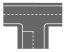
Preferred vector map #
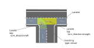
Incorrect vector map #
None in particular.
Related Autoware module#
- Intersection - Autoware Universe Documentation
- Blind Spot design - Autoware Universe Documentation
- virtual_traffic_light in behavior_velocity_planner - Autoware Universe Documentation
vm-03-03 Lanelet width in the intersection#
Detail of requirements： #
Lanelets in the intersection should have a consistent width. Additionally, draw Linestrings with smooth curves.
The shape of this curve must be determined by the Vector Map creator.
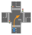
Preferred vector map #
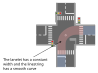
Incorrect vector map #
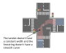
vm-03-04 Lanelet creation in the intersection#
Detail of requirements #
Create all Lanelets in the intersection, including lanelets not driven by the vehicle. Additionally, link stop lines and traffic lights to the Lanelets appropriately.
Refer also to the creation scope vm-07-01
Behavior of Autoware #
Autoware uses lanelets to predict the movements of other vehicles and plan the vehicle's velocity accordingly. Therefore, it is necessary to create all lanelets in the intersection.
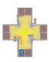
Preferred vector map #
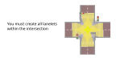
Incorrect vector map #
Related Autoware module#
vm-03-05 Lanelet division in the intersection#
Detail of requirements #
Create the Lanelets in the intersection as a single object without dividing them.
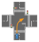
Preferred vector map #
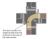
Incorrect vector map #
Related Autoware module#
vm-03-06 Guide lines in the intersection#
Detail of requirements #
If there are guide lines in the intersection, draw the Lanelet following them.
In cases where the Lanelets branches off, begin the branching at the end of the guide line. However, it is not necessary to share points or linestrings between Lanelets.
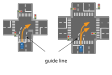
Preferred vector map #
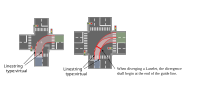
Incorrect vector map #
None in particular.
Related Autoware module#
vm-03-07 Multiple lanelets in the intersection#
Detail of requirements #
When connecting multiple lanes with Lanelets at an intersection, those Lanelets should be made adjacent to each other without crossing.
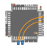
Preferred vector map #
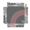
Incorrect vector map #
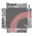
Related Autoware module#
vm-03-08 Intersection area range#
Detail of requirements #
Encircle the intersection's drivable area with a Polygon (type:intersection_area). The boundary of this intersection's Polygon should be defined by the objects below.
- Linestrings (subtype:road_border)
- Straight lines at the connection points of lanelets in the intersection."
Preferred vector map #
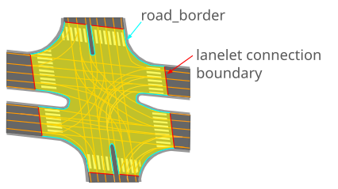
Incorrect vector map #
None in particular.
Related Autoware module#
- Intersection - Autoware Universe Documentation
- Blind Spot design - Autoware Universe Documentation
- Static Avoidance - Autoware Universe Documentation
- Dynamic Avoidance - Autoware Universe Documentation
vm-03-09 Range of Lanelet in the intersection#
Detail of requirements #
Determine the start and end positions of lanelets in the intersection (henceforth the boundaries of lanelet connections) based on the stop line's position.
- For cases with a painted stop line:
- The stop line's linestring (type:stop_line) position must align with the lanelet's start.
- Extend the lanelet's end to where the opposing lane's stop line would be.
- Without a painted stop line:
- Use a drawn linestring (type:stop_line) to establish positions as if there were a painted stop line.
Preferred vector map #
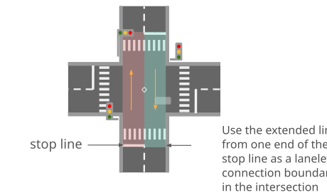
Incorrect vector map #
None in particular.
Related Autoware module#
vm-03-10 Right of way (with signal)#
Detail of requirements #
Set the regulatory element 'right_of_way' for Lanelets that meet all of the following criteria:
- Lanelets in the intersection with a turn_direction of right or left.
- Lanelets that intersect with the vehicle's lanelet.
- There are traffic lights at the intersection.
Set to yield those lanelets in the intersection that intersect the vehicle's lanelet, and set to yield those lanelets that do not share the same signal change timing with the vehicle. Also, if the vehicle is turning left, set the opposing vehicle's right-turn lane to yield. There is no need to set yield for lanelets where the vehicle goes straight (turn_direction:straight).
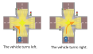
Preferred vector map #
The vehicle turns left #
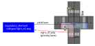
The vehicle turns right #
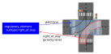
Incorrect vector map #
None in particular.
Related Autoware module#
vm-03-11 Right of way (without signal)#
Detail of requirements #
Set the regulatory element 'right_of_way' for Lanelets that meet all of the following criteria:
- Lanelets in the intersection with a turn_direction of right or left.
- Lanelets that intersect with the vehicle's lanelet.
- There are no traffic lights at the intersection.
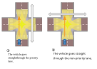
Preferred vector map #
① The vehicle on the priority lane #
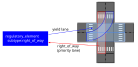
② The vehicle on the non-priority lane #
A regulatory element is not necessary. However, when the vehicle goes straight, it has relative priority over other vehicles turning right from the opposing non-priority road. Therefore, settings for right_of_way and yield are required in this case.
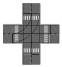
Incorrect vector map #
None in particular.
Related Autoware module#
vm-03-12 Right of way supplements#
Detail of requirements #
Why it's necessary to configure 'right_of_way' #
Without the 'right_of_way' setting, Autoware interprets other lanes intersecting its path as having priority. Therefore, as long as there are other vehicles in the crossing lane, Autoware cannot enter the intersection regardless of signal indications.
An example of a problem: Even when our signal allows proceeding, our vehicle waits beforehand if other vehicles are waiting at a red light where the opposing lane intersects with a right-turn lane.
Preferred vector map #
None in particular.
Incorrect vector map #
None in particular.
Related Autoware module#
vm-03-13 Merging from private area, sidewalk#
Detail of requirements #
Set location=private for Lanelets within private property.
When a road, which enters or exits private property, intersects with a sidewalk, create a Lanelet for that sidewalk (subtype:walkway).
Behavior of Autoware： #
- The vehicle stops temporarily before entering the sidewalk.
- The vehicle comes to a stop before merging onto the public road.
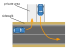
Preferred vector map #
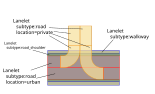
Incorrect vector map #
None in particular.
Related Autoware module#
vm-03-14 Road marking#
Detail of requirements #
If there is a stop line ahead of the guide lines in the intersection, ensure the following:
- Create a Lanelet for the guide lines.
- The Lanelet for the guide lines references a Regulatory Element (subtype:road_marking).
- The Regulatory Element refers to the stop_line's Linestring."
Refer to Web.Auto Documentation - Creation of Regulatory Element for the method of creation in Vector Map Builder.
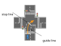
Preferred vector map #
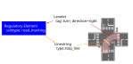
Incorrect vector map #
None in particular.
Related Autoware module#
vm-03-15 Exclusive bicycle lane#
Detail of requirements #
If an exclusive bicycle lane exists, create a Lanelet (subtype:road). The section adjoining the road should share a Linestring. For bicycle lanes at intersections, assign a yieldlane designation beneath the _right_of_way for lanes that intersect with the vehicle's left-turn lane. (Refer to vm-03-10 and vm-03-11 for right_of_way).
In addition, set lane_change = no as OptionalTags.
Behavior of Autoware： #
The blind spot (entanglement check) feature verifies the lanelet(subtype:road) and decides if the vehicle can proceed.
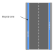
Preferred vector map #
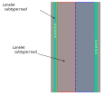
Incorrect vector map #
None in particular.